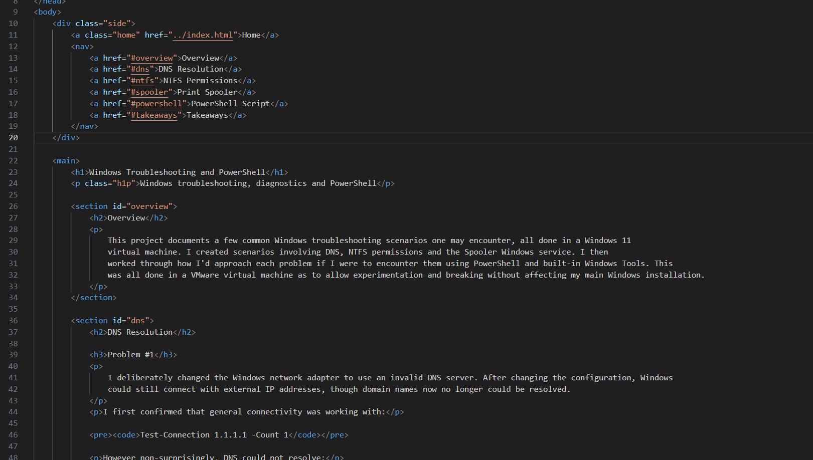
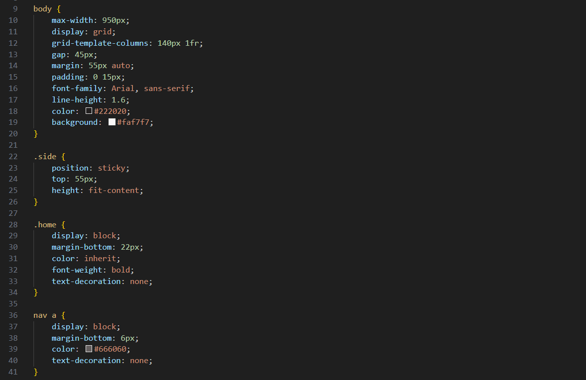

Web & Other Technologies
Overview
In this project, I will share how I went about building this site, the HTML, CSS and JavaScript I used to do so, the UI/UX considerations I took when planning out the site's layout and style, how I used Git for version control and GitHub to host it with my custom domain, and lastly some other miscellaneous technology I have experience with.Web Development
This Website
I built this website using raw HTML and CSS rather than a web framework or something like a frontend website builder. This choice allowed me greater customisation and much more direct control over elements and styling than if I had used something a bit more abstract, like Wix or Squarespace for example; Using just raw HTML and CSS also manages to make the site quite minimal and performant, which is a somewhat of a priority that I always obssess over and enjoy aiming to achieve.
HTML
To organise my content I used elements such as <section> to segment off sections,
<main> to keep my main content separate from the navigation
(<nav>). I used <pre> and <code> together
to display code blocks, with just <code> alone for inlining a monospace font. And lastly used
<p> for paragraphs and content along with <img> for media.

CSS
On the index page for the project cards, I used styled the normally inline
<a> hyperlink element to act as a block element
giving me full control of its padding, margin and border.
On my project pages but unlike index, I used
the grid layout allowing me to create a sticky navigation sidebar with anchor links.
The rest of my CSS was mainly adjusting the padding and margin, adding borders and tweaking colours.
I tried to only touch the bottom margin to keep things predictable and easy to
reason and understand.

JavaScript
UI/UX Design
My general aim was to mimic a clean documentation/wiki looking site, while reducing as much noise as possible with all focus on the content, reducing the risk of possible confusion of where to click next. I chose a light colour for daylight visibility but tinted it somewhat red to be softer and easier on the eyes than a pure #ffffff white, along with subtle contrast with the card and code blocks. I also created a contrast between header text and supporting text, to guide the eyes to more important elements and lessen visual clutter. The formatting of index page and general header elements was chosen to be left-alligned, as I find centre-alligned headers a little less appealing.
In general I tried to keep each <section>'s bottom margin 55px so there was a gap for 1. Easier mental
compartmentalisation, and 2. When clicking an anchor link, it brings you exactly to the start of the
<section>
without any previous <section>'s text above it.